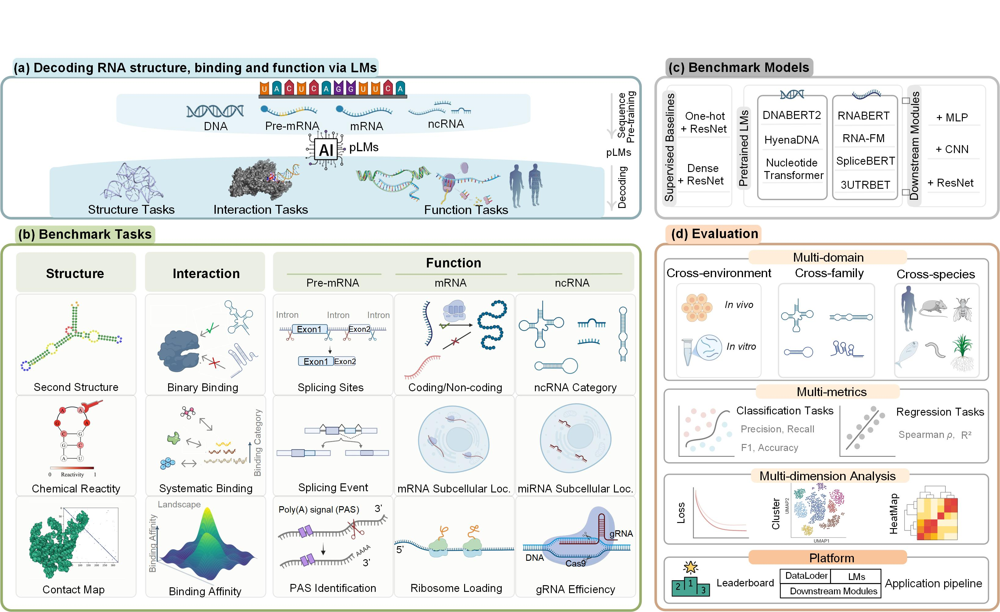

RNAscope: Benchmarking RNA Language Models for RNA Sequence Understanding

RNAscope provides a comprehensive benchmark for evaluating RNA language models across diverse tasks.
Leaderboard
Structure-related Tasks
Performance of RNA pLMs and baselines on structure-related tasks, including secondary structure prediction, chemical reactivity, and contact map prediction. Metrics include F1 scores for intra-family and inter-family tests, Mean Absolute Error (MAE) for chemical reactivity, and accuracy for contact map predictions.
Benchmark results for structure tasks. Results are reported as mean (std) from three runs with different seeds. The best and second-best models for each test set are highlighted in two shades of green. Three classifier modules—MLP, shallow CNN, and ResNet—are used with frozen pLM weights.
Model
Second Structure
Chemical Reactivity
Contact Map
Intra-family
Inter-family
TestS
TestL
Short@L/5 ↑
Long@L/5 ↑
F1 ↑
F1 ↑
MAE ↓
MAE ↓
Short@L/5 ↑
Long@L/5 ↑
One-hot
0.548(0.003)
0.482(0.006)
0.179(0.001)
0.167(0.002)
0.158(0.006)
0.168(0.007)
Dense
0.552(0.002)
0.501(0.007)
0.176(0.001)
0.174(0.002)
0.190(0.015)
0.170(0.006)
(+MLP)
RNABERT_mlp
0.551(0.004)
0.541(0.003)
0.255(0.000)
0.266(0.001)
0.013(0.001)
0.021(0.003)
RNA-FM_mlp
0.766(0.004)
0.608(0.002)
0.214(0.001)
0.187(0.003)
0.137(0.003)
0.129(0.002)
3UTRBERT_mlp
0.647(0.012)
0.597(0.003)
0.202(0.001)
0.195(0.002)
0.103(0.002)
0.086(0.003)
SpliceBERT_mlp
0.651(0.024)
0.586(0.011)
0.207(0.001)
0.207(0.001)
0.111(0.002)
0.121(0.002)
(+CNN)
RNABERT_cnn
0.598(0.003)
0.571(0.005)
0.228(0.001)
0.241(0.002)
0.117(0.005)
0.102(0.002)
RNA-FM_cnn
0.786(0.001)
0.590(0.005)
0.197(0.003)
0.176(0.001)
0.141(0.005)
0.150(0.004)
3UTRBERT_cnn
0.672(0.005)
0.588(0.016)
0.192(0.000)
0.182(0.002)
0.138(0.004)
0.109(0.005)
SpliceBERT_cnn
0.691(0.003)
0.565(0.004)
0.196(0.001)
0.179(0.002)
0.150(0.007)
0.140(0.004)
(+ResNet)
RNABERT_resnet
0.685(0.003)
0.576(0.015)
0.181(0.002)
0.175(0.003)
0.084(0.003)
0.083(0.003)
RNA-FM_resnet
0.775(0.001)
0.607(0.001)
0.196(0.004)
0.166(0.004)
0.145(0.008)
0.150(0.007)
3UTRBERT_resnet
0.685(0.007)
0.576(0.015)
0.187(0.002)
0.172(0.004)
0.137(0.016)
0.122(0.002)
SpliceBERT_resnet
0.695(0.006)
0.574(0.005)
0.193(0.004)
0.177(0.003)
0.155(0.002)
0.161(0.009)
Performance of RNA pLMs and baselines on secondary structure prediction, including Precision and Recall for both intra-family and inter-family tests. Results are mean (std) from three runs with different seeds, with the best and second-best models highlighted.
Model
Second Structure
Intra-family Test
Inter-family Test
Precision ↑
Recall ↑
Precision ↑
Recall ↑
One-hot
0.465(0.008)
0.668(0.021)
0.399(0.002)
0.608(0.022)
Dense
0.433(0.015)
0.763(0.039)
0.387(0.006)
0.712(0.047)
(+MLP)
RNABERT_mlp
0.551(0.003)
0.551(0.007)
0.517(0.000)
0.567(0.007)
RNA-FM_mlp
0.747(0.001)
0.788(0.007)
0.563(0.003)
0.661(0.008)
3UTRBERT_mlp
0.600(0.008)
0.702(0.022)
0.529(0.006)
0.686(0.017)
SpliceBERT_mlp
0.613(0.018)
0.696(0.040)
0.533(0.007)
0.652(0.034)
(+CNN)
RNABERT_cnn
0.587(0.004)
0.610(0.011)
0.542(0.002)
0.603(0.013)
RNA-FM_cnn
0.763(0.009)
0.812(0.012)
0.541(0.007)
0.650(0.015)
3UTRBERT_cnn
0.612(0.015)
0.748(0.019)
0.509(0.011)
0.697(0.037)
SpliceBERT_cnn
0.634(0.003)
0.760(0.011)
0.496(0.005)
0.656(0.013)
(+ResNet)
RNABERT_resnet
0.593(0.026)
0.818(0.058)
0.479(0.011)
0.730(0.077)
RNA-FM_resnet
0.734(0.008)
0.820(0.012)
0.540(0.009)
0.693(0.016)
3UTRBERT_resnet
0.597(0.010)
0.804(0.036)
0.485(0.004)
0.713(0.051)
SpliceBERT_resnet
0.627(0.012)
0.781(0.033)
0.491(0.008)
0.692(0.031)
注： ↑ 表示指标越高越好，↓ 表示指标越低越好。
Interaction-related Tasks
Benchmark results on interaction tasks, including binary binding classification, systematic binding, and binding affinity.
Benchmark results on interaction tasks. Results are mean (std) from three runs with different seeds, with the best and second-best models highlighted. Binary binding classification task comprises 22 RBP datasets, with average performance reported. Further detailed in Tables ref_results_interaction_rbp1 and ref_results_interaction_rbp2 in the Appendix.
Model
Binary Binding
Systematic Binding
Binding Affinity
22 RBP's Average
DAse
TARDBP
ISLETS
GFP Spear r
NELF Spear r
F1 ↑
F1 ↑
F1 ↑
F1 ↑
Spear r ↑
Spear r ↑
One-hot
0.703
0.614(0.005)
0.461(0.010)
0.415(0.003)
0.215(0.008)
0.668(0.130)
Dense
0.704
0.622(0.001)
0.472(0.003)
0.412(0.002)
0.138(0.041)
0.388(0.059)
(+MLP)
DNABERT2_mlp
0.683
0.629(0.003)
0.425(0.005)
0.403(0.002)
-0.124(0.044)
0.148(0.010)
HyenaDNA_mlp
0.640
0.522(0.004)
0.376(0.003)
0.317(0.015)
0.092(0.063)
0.140(0.005)
NT_mlp
0.666
0.599(0.010)
0.391(0.001)
0.360(0.035)
0.139(0.050)
0.314(0.004)
RNABERT_mlp
0.539
0.528(0.006)
0.307(0.006)
0.309(0.007)
-0.049(0.036)
0.129(0.005)
RNA-FM_mlp
0.698
0.605(0.006)
0.396(0.006)
0.369(0.012)
0.073(0.006)
0.331(0.009)
3UTRBERT_mlp
0.716
0.611(0.007)
0.401(0.005)
0.397(0.005)
-0.043(0.005)
0.317(0.046)
SpliceBERT_mlp
0.736
0.620(0.012)
0.396(0.007)
0.367(0.012)
0.079(0.010)
0.298(0.003)
(+CNN)
DNABERT2_cnn
0.685
0.640(0.002)
0.456(0.001)
0.414(0.002)
-0.030(0.002)
0.241(0.021)
HyenaDNA_cnn
0.697
0.597(0.006)
0.438(0.004)
0.390(0.007)
0.139(0.011)
0.181(0.009)
NT_cnn
0.674
0.622(0.012)
0.448(0.006)
0.396(0.002)
0.138(0.017)
0.259(0.007)
RNABERT_cnn
0.642
0.538(0.002)
0.414(0.008)
0.341(0.007)
-0.016(0.003)
0.135(0.003)
RNA-FM_cnn
0.724
0.640(0.016)
0.460(0.013)
0.410(0.004)
0.224(0.073)
0.384(0.002)
3UTRBERT_cnn
0.728
0.642(0.002)
0.462(0.007)
0.403(0.003)
0.207(0.184)
0.194(0.008)
SpliceBERT_cnn
0.748
0.639(0.006)
0.466(0.003)
0.414(0.003)
0.107(0.011)
0.340(0.007)
(+ResNet)
DNABERT2_resnet
0.669(0.003)
0.617(0.009)
0.438(0.002)
0.401(0.006)
0.267(0.014)
0.580(0.029)
HyenaDNA_resnet
0.727
0.623(0.005)
0.471(0.003)
0.411(0.005)
0.376(0.032)
0.625(0.143)
NT_resnet
0.681
0.638(0.013)
0.454(0.004)
0.413(0.003)
0.334(0.009)
0.626(0.015)
RNABERT_resnet
0.675
0.599(0.003)
0.461(0.003)
0.404(0.002)
0.029(0.165)
0.677(0.052)
RNA-FM_resnet
0.719
0.634(0.004)
0.460(0.008)
0.409(0.001)
0.407(0.046)
0.646(0.059)
3UTRBERT_resnet
0.728
0.624(0.009)
0.468(0.008)
0.414(0.002)
0.262(0.165)
0.498(0.213)
SpliceBERT_resnet
0.750
0.617(0.013)
0.456(0.002)
0.406(0.003)
0.162(0.071)
0.510(0.040)
注： ↑ 表示指标越高越好，↓ 表示指标越低越好。
Detailed Binary Binding Interaction Results
Click the button below to view detailed results for binary binding interactions across 22 RNA-binding protein (RBP) datasets.
Detailed results for binary binding prediction across 22 datasets, each corresponding to one of 22 RNA-binding proteins (RBPs) in K562 and HepG2 cell lines. The reported values represent mean (std) obtained from three independent runs with distinct random seeds. The top-performing and second-best models for each dataset are highlighted in two shades of green, denoted as best and second-best, respectively.